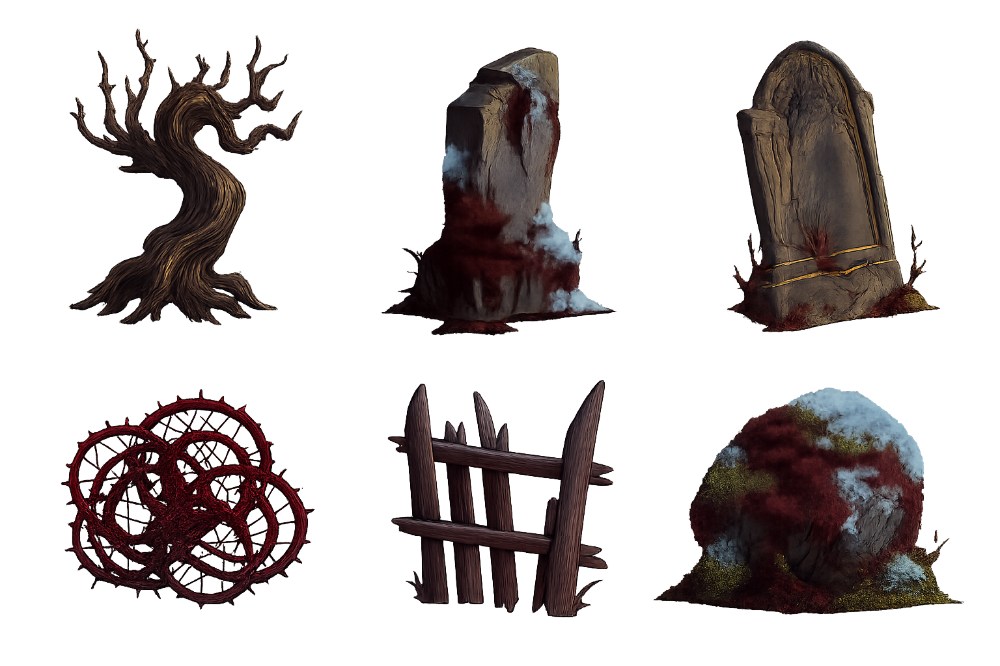
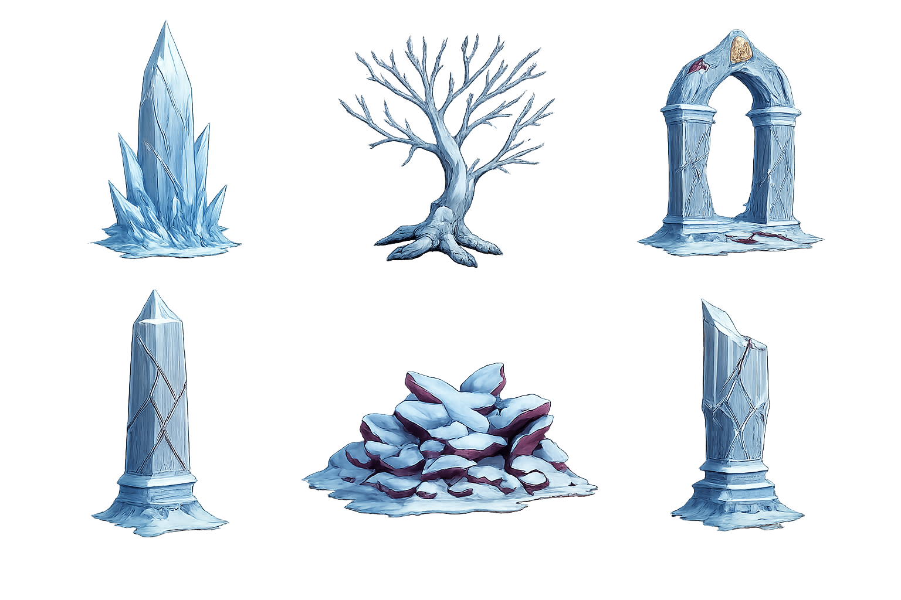
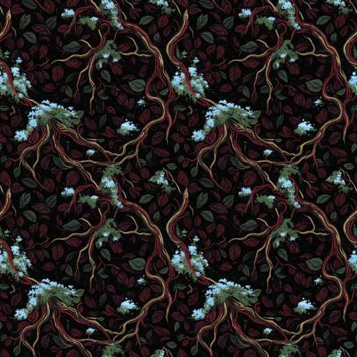
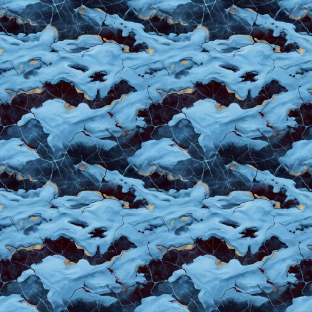
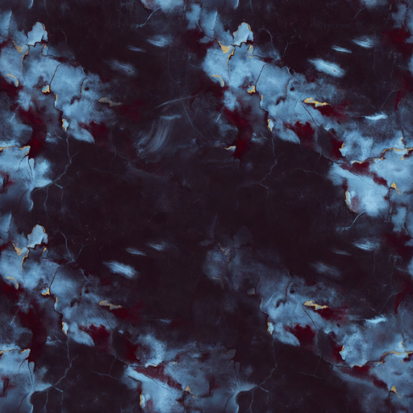
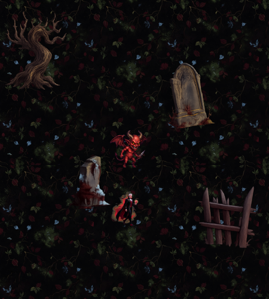
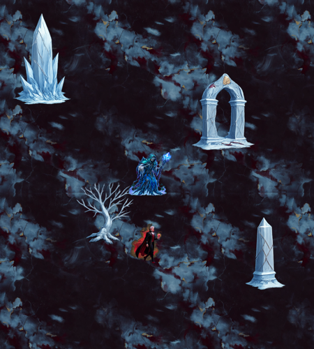

幽暗森林 · 六件
可用
五個關卡的盤點，加上幽暗森林與冰雪絕地的場地素材試樣。裝飾物走四分之三傾斜視角、有高度有體積；地面走接近俯視的無縫貼圖。地面出了兩版，第一版實測有問題。
| 關卡 | 時間 | 特殊機制 | 視覺主題／氛圍 |
|---|---|---|---|
| 1 幽暗森林 | 0–10 分 | — | 潮濕的黑土與枯葉，扭曲的裸根、墓碑、倒伏的柵欄。第一印象，要暗但看得清楚 |
| 2 血月荒原 | 10–20 分 | 追擊怪 | 龜裂的火山荒地、巨石陣、乾涸血河。血月獵殺者殺不死、全關追著你跑，地面要空曠好走位 |
| 3 深淵沼澤 | 20–30 分 | 包圍網（20 分起） | 毒沼、發光菌菇、枯木殘骸、腐爛棧道。每 90 秒 36 隻小怪圍成一圈 |
| 4 冰雪絕地 | 30–40 分 | 強制向東移動 | 結冰的黑冰原、冰晶尖柱、凍結枯樹、半埋的石拱。暴風雪從西面推進，回頭路封死 |
| 5 魔王城堡 | 40–50 分 | 領域結界魔王 | 破碎的大理石地磚、斷裂石柱、王座殘骸、金色紋章。最終決戰，最華麗 |
另外兩個跨關的視覺事件：包圍網（第 3 關起，每 90 秒 36 隻小怪圍成一圈逼你離開角落）與領域結界（後四隻魔王會把鏡頭拉遠 1.22 倍，需要更大的可視場地）。這兩個目前都沒有專屬的場地表現。






按遊戲真正的比例合成：視野半寬 3.25 世界單位、角色高約 0.9 單位、一塊地磚 4 單位。裝飾物依 Y 座標排序，玩家可以走到它前面或後面。


你要的「傾斜視角」我拆成兩半做，不是打折，是因為兩者的限制不同：
SpriteDrawMode.Tiled，跟著玩家跳格移動），而透視是無縫平鋪的天敵——有透視就有地平線，重複一次就會出現第二條地平線、第三條。所以地面只用明暗與筆觸暗示角度。目前遊戲裡完全沒有裝飾物系統（資料裡那些 Obstacles 欄位只是 emoji，從來沒被讀過），所以除了素材，還要寫一套「跟著玩家生成／回收、按 Y 排序」的擺放程式。
目前共 6 張 Grok 生圖（每張約 $0.2，含地面兩版）＋ 2 次 OpenAI 去背，約 $1.2。沒有遇到 Grok 額度不足。
全部都在暫存路徑，沒有動到遊戲專案的 Assets/。你確認後我才會裁切、搬進去、寫擺放程式，然後再產剩下三關（血月荒原、深淵沼澤、魔王城堡）。